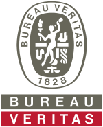

뷰로 베리타스 Bureau Veritas
뷰로 베리타스(Bureau Veritas)는 1828년에 설립된 프랑스의 시험·검사·인증(TIC) 전문 기업이다. 건축·인프라, 농식품·원자재, 해양·오프쇼어, 산업 등 여러 분야에서 서비스를 제공한다.
최종 업데이트

뷰로 베리타스는 어떤 브랜드인가
뷰로 베리타스는 시험, 검사, 인증을 전문으로 하는 프랑스 기업이며 본사는 뇌이쉬르센에 있다. 1828년에 설립된 오랜 역사를 가진 기업이다.
매출 구성은 건축·인프라 27%, 농식품·원자재 23%, 산업 22%, 소비재 14%, 해양·오프쇼어 7%, 인증 7%이며 교육 분야도 운영한다. 140개국에서 1,500개가 넘는 사무소와 실험실 네트워크를 갖추고 있으며 직원은 79,000명이다.
2024년 매출은 $6.34 billion으로 집계되었다. 2023년 6월부터 Hinda Gharbi가 CEO를 맡고 있으며, 2024년 12월 20일 거래 마감 기준으로 CAC 40 구성 종목이 되었다.
뷰로 베리타스는 어떻게 시작되고 성장했나
1828년 벨기에 안트베르펜에서 Bureau de renseignements pour les assurances maritimes(해상보험 정보 사무소)라는 이름으로 설립되었다. 사명은 진실을 확립하고 두려움이나 편파 없이 밝히는 것이었으며, 보험사에 선박과 장비의 신뢰성을 평가할 정보를 제공했다.
1829년 5월 28일 Bureau Veritas라는 이름을 채택했고, 1833년 7월 본사를 파리로 옮겼다. 1990년을 기점으로 인증과 정부 서비스 사업을 키우고 아프리카, 중국, 미국에 사무소를 열며 확장했다.
2007년 10월 24일 Euronext Paris에 상장했다.
뷰로 베리타스의 브랜드 아이덴티티는 무엇인가
해상보험 정보 사무소로 출발해 선박 신뢰성 평가에서 건축·농식품·산업 전반의 시험·검사·인증으로 영역을 넓힌 프랑스 TIC 기업이다.
뷰로 베리타스의 대표 제품과 서비스는 무엇인가
사업은 건축·인프라, 농식품·원자재, 해양·오프쇼어, 산업, 인증, 소비재, 교육 분야로 구성된다. 인증 및 정부 서비스 사업을 통해 경영 시스템과 공급망을 평가한다.
2010년 Inspectorate를 인수하면서 원자재 분야 세계 상위 3대 업체가 되었고, 2014년 Maxxam을 인수하면서 캐나다에서 해당 분야 선두가 되었다. 중국에서는 건설과 소비재 분야의 인수를 이어갔다.
2015년 전략은 농식품, 건설·인프라, 커넥티드 오브젝트, 자동차 같은 고성장 분야로 사업을 넓히는 것이었다.
뷰로 베리타스는 지금 어떤 상태인가
2020년 매출은 거의 10% 감소한 €4.6 billion이었으나 순이익 €125.3 million을 기록했고, 사업 다각화가 흑자 유지에 기여했다. 2024년 3월 포트폴리오, 성과, 인적 자본의 세 축으로 이루어진 LEAP | 28 전략을 발표했다.
2023년 6월부터 Hinda Gharbi가 CEO를 맡고 있으며, 2024년 12월에는 CAC 40에 편입되었다.
뷰로 베리타스 로고는 어떻게 변해왔나
자주 묻는 질문
뷰로 베리타스는 어느 나라 브랜드인가요?
뷰로 베리타스는 프랑스의 브랜드·비즈니스 브랜드입니다.
뷰로 베리타스는 언제 설립되었나요?
뷰로 베리타스는 1828년 설립되었습니다.
뷰로 베리타스의 브랜드 아이덴티티는 무엇인가요?
해상보험 정보 사무소로 출발해 선박 신뢰성 평가에서 건축·농식품·산업 전반의 시험·검사·인증으로 영역을 넓힌 프랑스 TIC 기업이다.
뷰로 베리타스의 대표 제품은 무엇인가요?
사업은 건축·인프라, 농식품·원자재, 해양·오프쇼어, 산업, 인증, 소비재, 교육 분야로 구성된다.
뷰로 베리타스는 현재 어떤 상태인가요?
2020년 매출은 거의 10% 감소한 €4.6 billion이었으나 순이익 €125.3 million을 기록했고, 사업 다각화가 흑자 유지에 기여했다.
뷰로 베리타스의 본사는 어디에 있나요?
뷰로 베리타스의 본사는 뇌이쉬르센에 있습니다(위키데이터 기준).
뷰로 베리타스의 공식 웹사이트는 어디인가요?
뷰로 베리타스의 공식 웹사이트는 http://www.bureauveritas.com/ 입니다.
출처와 검증
뷰로 베리타스 관련 참고: 공식 웹사이트 · 위키데이터 Q1974503 · 한국어 위키백과 · 영어 위키백과. 브랜드명은 한글과 원어를 함께 표기하되 데이터에 없는 표기는 만들지 않습니다. 기원 국가·설립연도는 검수된 정의문에서 확인된 값을 우선하고, 없을 때만 공식 웹사이트 URL이 일치하는 위키데이터 개체의 값을 씁니다. 위키데이터 값은 2026-11-13 기준입니다.